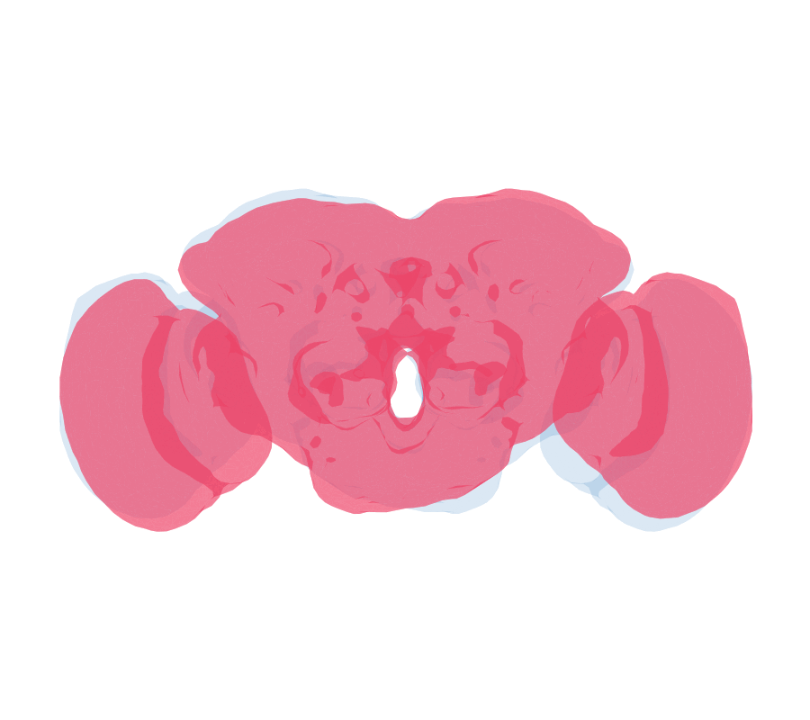

Goal
Build a left-right (L-R) registration of the fly brain: a diffeomorphism that maps one hemisphere onto the mirror image of the other, so structures on the left can be compared directly with their counterparts on the right. This is the package-native, Deformetrica-4 re-implementation of the FAFB L-R bridging registration in flyconnectome/deformetricaLR.
Here we register the whole FAFB brain surface to its own mirror image — the flipped brain (red) flows onto the original (grey) under the fitted diffeomorphism, correcting the brain’s L-R asymmetry:

1. The FAFB brain and its mirror
brain <- as.mesh3d(elmr::FAFB.surf) # FAFB whole-brain surface
xyzmatrix(brain) <- xyzmatrix(brain) / 1000 # nm -> um: Deformetrica needs ~O(1-100) coords
## Reflect across the brain's X-midline; flip face winding so normals stay outward
## (SurfaceMesh / Current attachment uses them).
V <- t(brain$vb[1:3, ]); midX <- mean(range(V[, 1]))
mir <- brain
mir$vb[1, ] <- 2 * midX - brain$vb[1, ]
mir$it <- mir$it[c(2, 1, 3), ]2. Deformetrica surface registration (flipped → original)
Decimate both surfaces, then fit one diffeomorphism mapping the
flipped brain onto the original (SurfaceMesh +
Current — no vertex correspondence needed). The kernel
width is set from the bounding box so the control-point grid stays
bounded.
src <- Rvcg::vcgQEdecim(mir, tarface = 4000) # flipped (moving)
tgt <- Rvcg::vcgQEdecim(brain, tarface = 4000) # original (fixed)
kw <- sqrt(sum((apply(V, 2, max) - apply(V, 2, min))^2)) / 15
fit <- deformetrica_register(src, tgt, kernel_width = kw, timepoints = 15,
max_iterations = 100, device = "auto", verbose = TRUE)3. Apply + GIF of the L-R flow
deformetrica_shoot() flows any object through the fitted
diffeomorphism (returning the same class you give it). With
flow = TRUE it returns every geodesic timepoint,
which ggplot_flow_gif() animates with
nat.ggplot: the flipped brain (red) flowing onto the
translucent original.
flow <- deformetrica_shoot(mir, fit$control_points, fit$momenta,
kernel_width = fit$kernel_width, flow = TRUE) # list of meshes
ggplot_flow_gif(list(mirror = flow), cols = c(mirror = "#EE4266"), alpha = 0.45,
volume = brain, volume_col = "#2C7FB8", volume_alpha = 0.09,
rotation_matrix = diag(c(1, -1, 1, 1)), # dorsal-up frontal view
file = "fafb_left_right.gif") # needs gifski or magick4. Validation — does the warp tighten the L-R match?
The registration is good if the warped mirror brain sits closer to the original than the raw flip does. Score with the symmetric surface distance.
final <- deformetrica_shoot(mir, fit$control_points, fit$momenta, kernel_width = fit$kernel_width)
d_flip <- Rvcg::vcgClostKD(nat::xyzmatrix(mir), brain)$quality
d_warped <- Rvcg::vcgClostKD(nat::xyzmatrix(final), brain)$quality
c(flip = median(abs(d_flip)), warped = median(abs(d_warped))) # warped should be smallerRegistering matched neuron tracts instead
deformetricaLR built its L-R registration not from the brain surface
but from a set of matched cognate neuron tracts — one
diffeomorphism fit to many objects at once.
deformetrica_register_multi() does exactly that, and mixes
object types (meshes, neurons as polylines, point sets):
# sources / targets: named lists of matched objects (e.g. left/right cognate neurons)
fit <- deformetrica_register_multi(
sources = list(DA1 = right_DA1, MB = right_MB),
targets = list(DA1 = left_DA1, MB = left_MB),
kernel_width = 15,
landmarks = list(source = lm_right, target = lm_left)) # optional global anchor